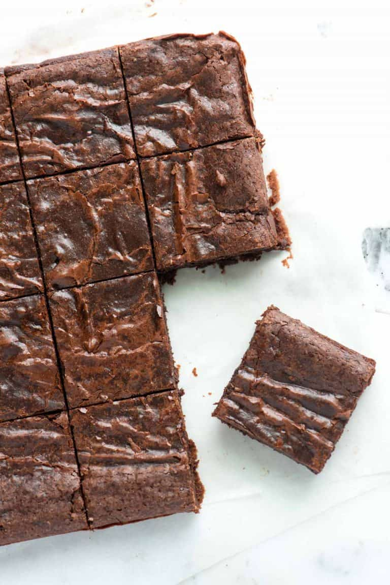

Brownies

Ingredients
- Cocoa powder – Cocoa powder makes these brownies so delicious.
- Butter – We use 100% butter in the recipe.
- Granulated Sugar – Helps with our shiny top, and balances the bitterness of unsweetened cocoa powder.
- Eggs – Adds richness and provide structure to the brownies.
- All-Purpose Flour - These easy brownies need a small amount of flour for structure.
Steps
- Preheat - Position an oven rack in the middle of the oven and heat to 325°F (162°C).
- Hot Butter - Add the butter to a medium saucepan. Place over medium-low heat and cook until the butter melts completely, then turn off the heat.
- Yes, Stir - While the butter is hot, stir in the sugar, cocoa powder, vanilla, and salt.
- Step Aside - Set the saucepan aside to cool until the mixture is warm, not hot, 5 to 10 minutes.
- Cold Egg Time - Add the cold eggs, one at a time, stirring vigorously after each egg.
- Bake - Bake the brownies until the edges look dry and the middle is slightly underbaked, 20 to 30 minutes.